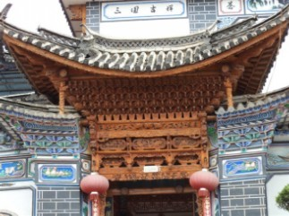
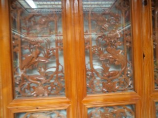
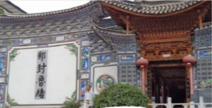
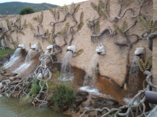
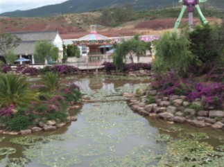
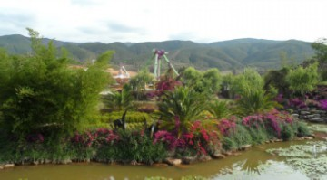
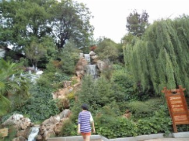
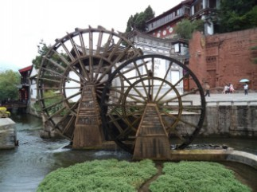

云南之旅12白族习俗
#1 云南之旅12白族习俗 作者：蓝天蓝 发表时间：2011-7-5 15:54:11
云南之旅12白族习俗
时间2011.6.24下午
大理的白族人的聚居地，白族人的房屋建筑采用白墙灰瓦，比白为基本色调。典型的白族民居一般为“三房一照壁”。所谓“三房一照壁”，即每户院内均有一正房。两厢房；正房对面是一面墙壁，每当下午至傍晚阳光照耀在这一墙壁上再反光到院内，把整个院落都照得明亮。故称“照壁”。
装饰是白族民居建筑的又一特点，十分注重门楼，飞檐翘角，斗拱彩画，颇具特色，门窗、照壁多用剑川木雕、以及大理石，彩绘和水墨画装饰，工艺精致，清新典雅，在西南民居建筑中，堪称一流。
 
大理有四大家族是：严家、杨家 、张家、董家，其中杨家 、张家、董家，的房子在文革都被破坏了，只有严家后来的子孙舍弃了祖业，举家迁离的大理去美国定居了，就因为这样他们的祖业在文革中才没有被破坏，文革过后，他们回国了，国家想把祖业还给他们，他们没有要，无偿的献给了国家，国家经过装修，我们现在才能看到这些房子的照片，上面的照片就是严家的房子。

上面的字是只有严家的房子才能写的，别人家的房子是不允许写的，还有杨家可以写：“清河世家”，董家可以写：“紫气东来”，一般的百姓人家只能写：“福”字。
大理白族人跟男的叫：阿鹏哥，表示男的很勇敢，就像大鹏鸟一样可以舍身救人，女的叫：金花，说明女人很漂亮，就像金花一样。大理白族女人地位是很高的，女人可以叫“风花雪月”，在大理白族都是男方嫁到女方的，孩子随女方姓，女方负责养老的。而丽江纳西族的女人就恰恰相反了，叫“披星戴月”，什么重活都是女人干，而那男人呢，就弄琴棋书画 ，或者打打麻将，放放鹰 什么的，比较舒服。
大理白族的提亲也很不同，他们特别喜欢6字，
所以要带的彩礼主要有：
1、6斤6两重的大公鸡
2、6双银筷子和6个银碗
还有3和4 ，没有记住，导游说的太快了，大公鸡拿来以后，女方要先称一下的，如果不够6斤6两重，说明你没有诚意，请回吧，如果分量超过6斤6两重，说明今天不适合提亲，请改天再来
彩礼如果都合格了，女方有2种对待提亲人飞方法，一种方法是同意了，一种方法表示不同意
具体做法：1、请提亲人大吃大喝一顿
2、请提亲人品尝三道茶
这里先不说，哪个是同意，哪个是拒绝，大家先猜想一下
先介绍一下三道茶都是什么
1、头道茶 是：苦茶
制作头道茶的方法是，先把上好茶叶放入土陶罐中用文火烤，边烤边抖，直至茶叶微黄并发出清香味，然后冲入开水，茶罐内即发出声响并冒出水泡。待水泡沫散去，陶罐内即留下少许又苦又香的浓酽茶汁。头道茶因开水冲入罐时有响声，故又叫雷响茶。苦茶具有 提神、醒脑和抗疲劳的功效
2、二道茶，甜茶。
#2 Re:云南之旅12白族习俗 作者：掌棋如烟 发表时间：2011-7-5 17:45:35
要求多点照片,风景的,和帅哥的#3 Re:Re:云南之旅12白族习俗 作者：蓝天蓝 发表时间：2011-7-5 19:31:35
引用：风景照片不少，帅哥的照片没有，哈哈
原文由 掌棋如烟 发表于 2011-7-5 17:45:35 :
要求多点照片,风景的,和帅哥的
#4 Re:云南之旅12白族习俗 作者：被感动的人 发表时间：2011-7-5 19:34:03
我喜欢风景照~#5 Re:云南之旅12白族习俗 作者：被感动的人 发表时间：2011-7-5 19:34:26
顺便，我猜的三道茶，猜对了哈~［ 蓝天蓝 于 2011-7-5 19:51:56 时花20金币送鲜花一朵］
#6 Re:云南之旅12白族习俗 作者：蓝天蓝 发表时间：2011-7-5 19:35:38
上传一些风景照片
 
 

［此帖子已被 蓝天蓝 在 2011-7-5 19:53:15 编辑过］
［ 掌棋如烟 于 2011-7-6 8:03:48 时花20金币送鲜花一朵］
#7 Re:云南之旅12白族习俗 作者：掌棋如烟 发表时间：2011-7-6 8:04:44
楼上最后一张图好眼熟啊,这不就是QQ找茬游戏里的一张图嘛,挖哈哈,原来是出自云南的